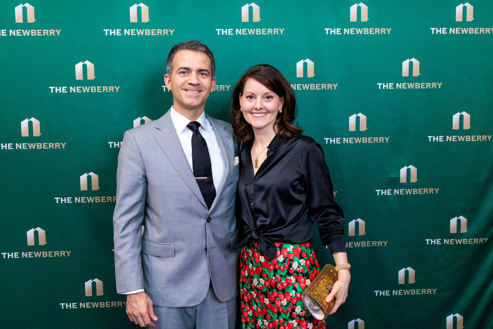
More than 300 guests enjoyed a lovely evening at The Drake on April 10, celebrating the Newberry, the humanities, and the career of esteemed author Jonathan Franzen. The Newberry’s annual Award Celebration raises funds to support the library’s collections and programs. The highlight of the night was the presentation of the Newberry Library Award and a conversation between President and Librarian Astrida Orle Tantillo and Franzen.
“I feel so at home when I’m in a room with people who care about books,” said the best-selling author of The Corrections, Freedom, and Crossroads.
Tantillo, a German scholar, discussed Franzen’s research at the German Literature Archive Marbach, one of the world’s most important literary institutions. Franzen shared insight into his writing process and the influence of libraries.
“My first library experience was [growing up] in Webster Groves, Missouri,” Franzen said. “The fact that you could pick up the books and take them home. I remember the smell and tactile experience of those books.”
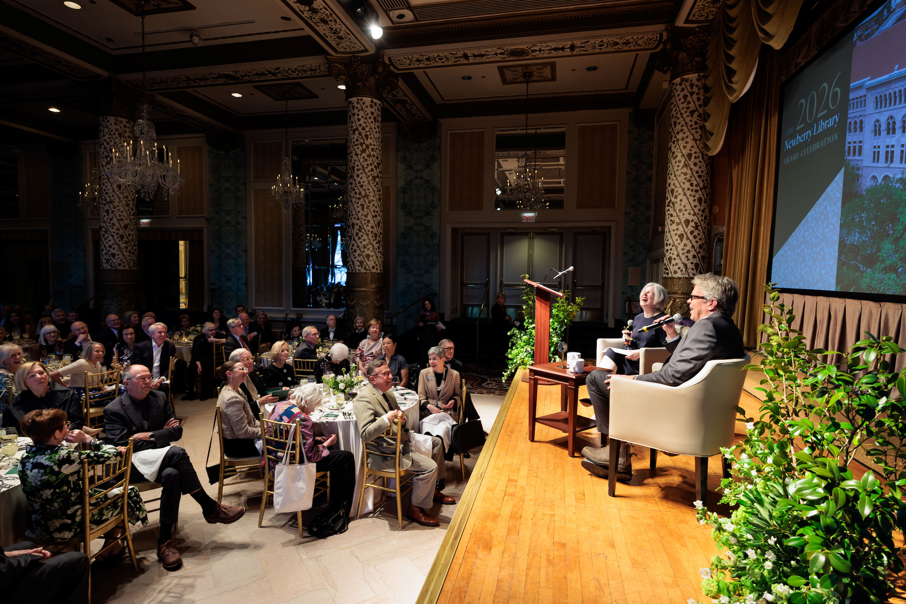
The Newberry Library Award is presented annually to recognize achievement in the humanities in the tradition of the Newberry, which has cultivated the life of the mind since its founding in 1887. Past recipients include filmmaker and scholar Henry Louis Gates Jr., filmmaker Ken Burns; Ira Glass and This American Life; Lonnie G. Bunch III, Secretary of the Smithsonian Institution; and Carla Hayden, 14th Librarian of Congress, among others.

Franzen’s 2001 work, The Corrections, currently ranks as the #2 novel on the New York Times Book Review’s “100 Best Books of the 21st Century.” His follow-up novel, Freedom, has been called “a masterpiece of American fiction,” winning the John Gardner Prize and the Heartland Prize for fiction and chosen as one of the New York Times “10 Best Books of 2010.” The 2021 work, Crossroads, is the first in an expected trilogy centered on a fictional small town in Illinois.
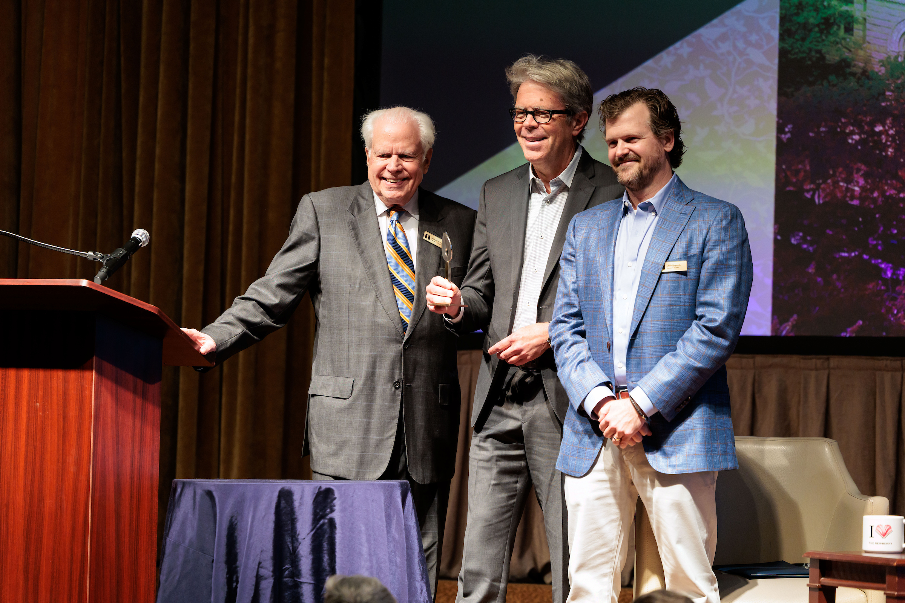
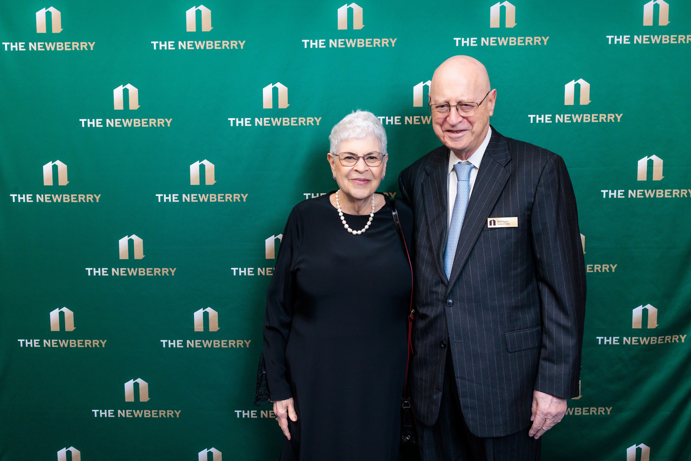
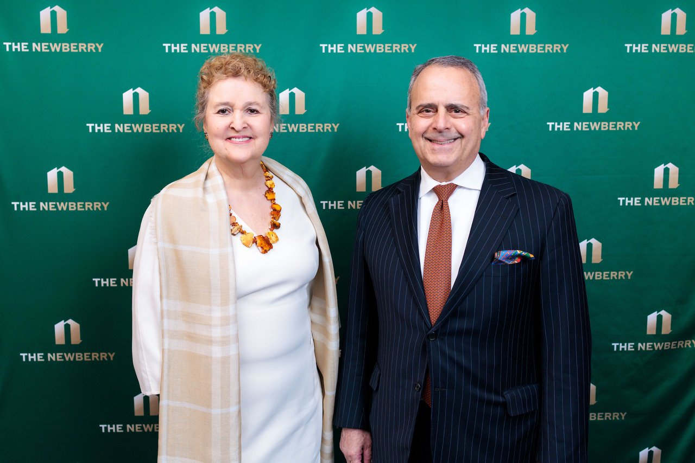
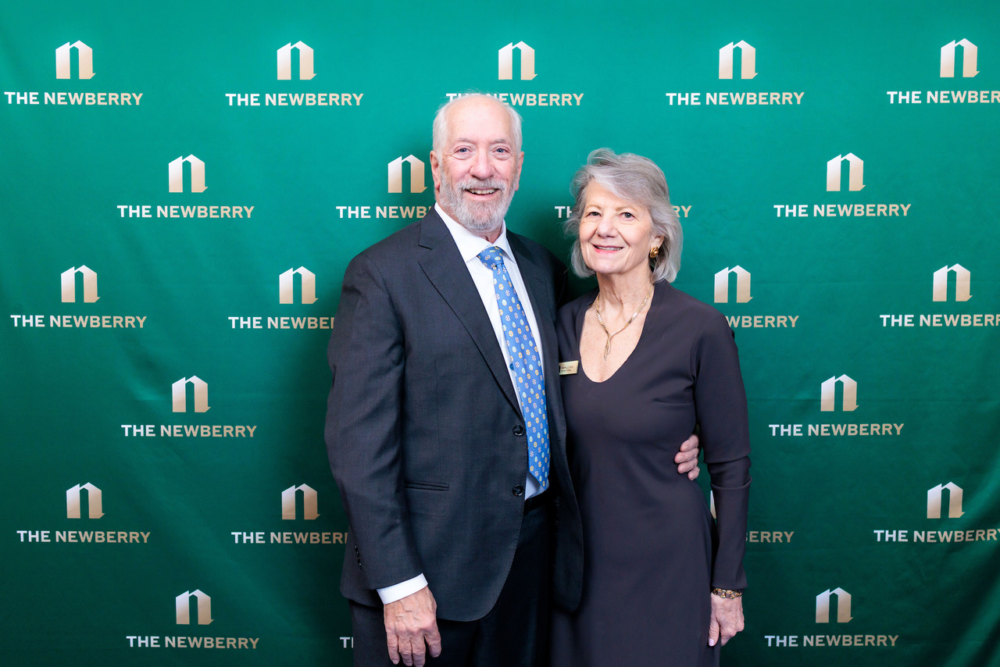
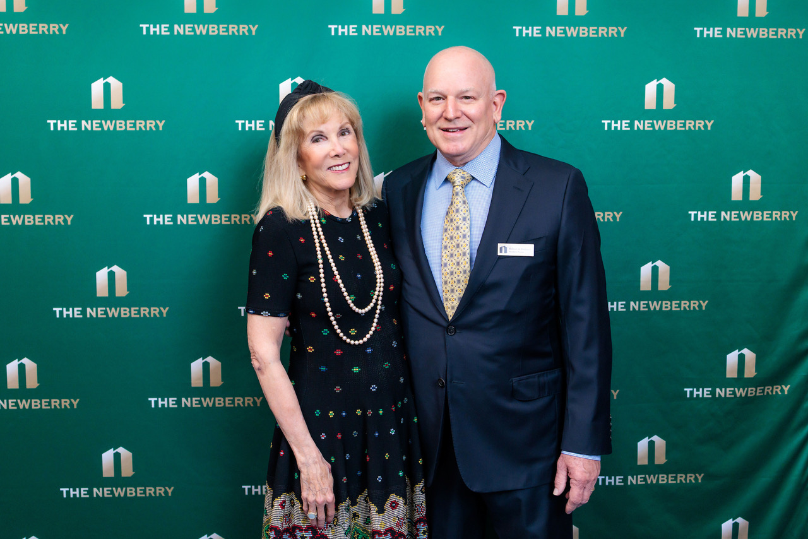
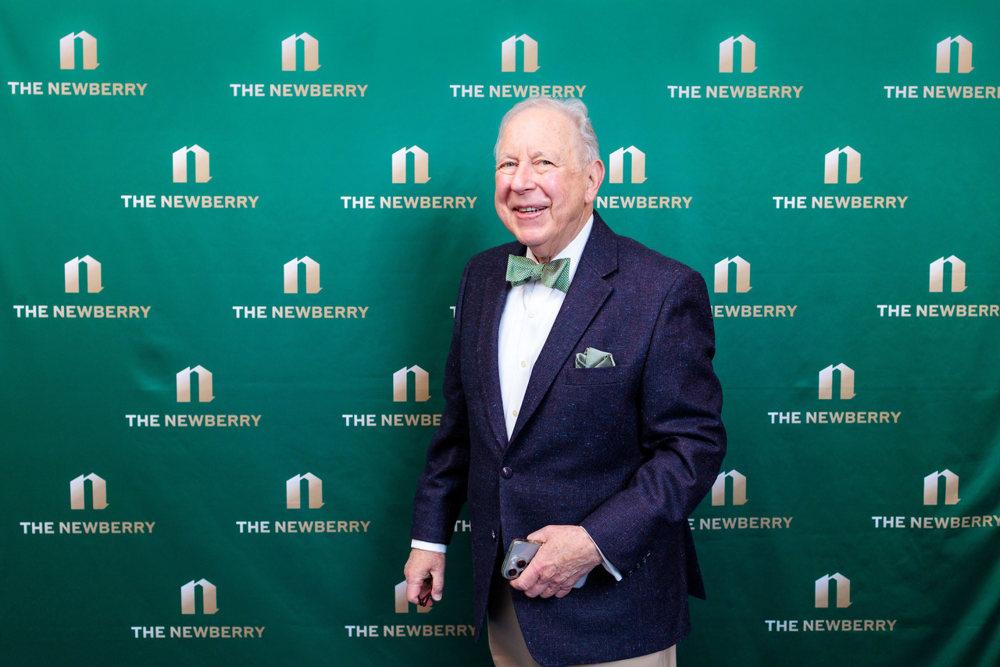
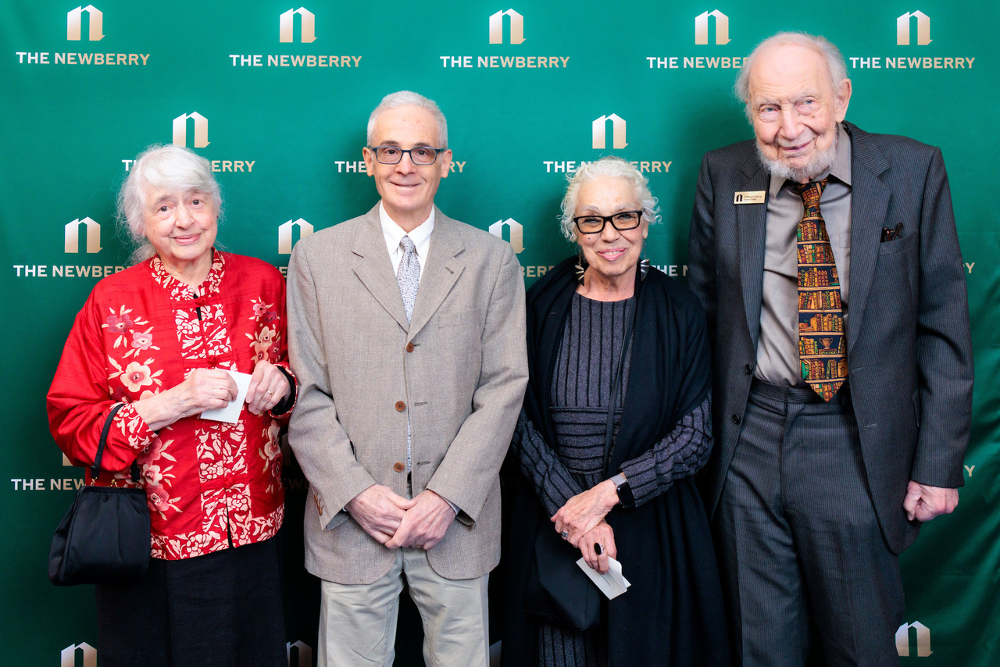
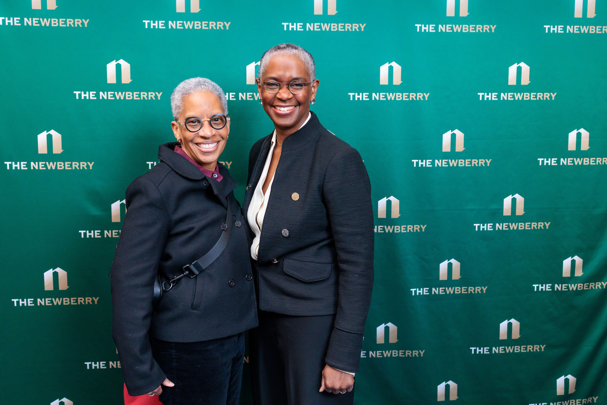
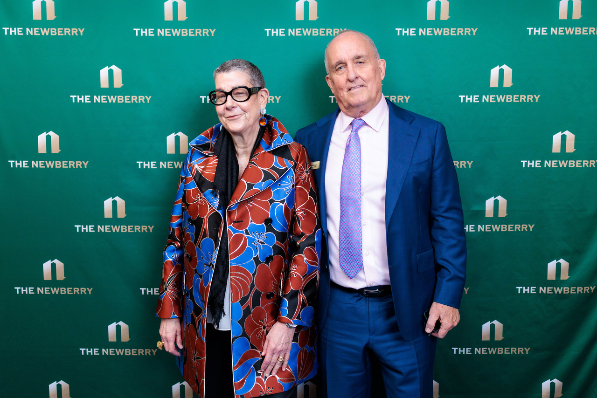
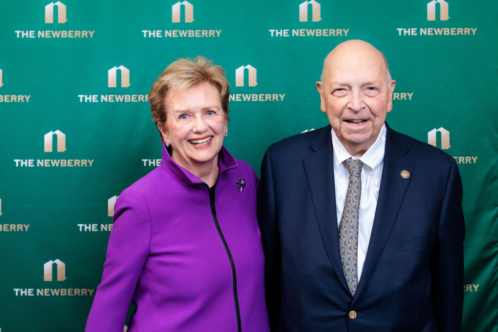

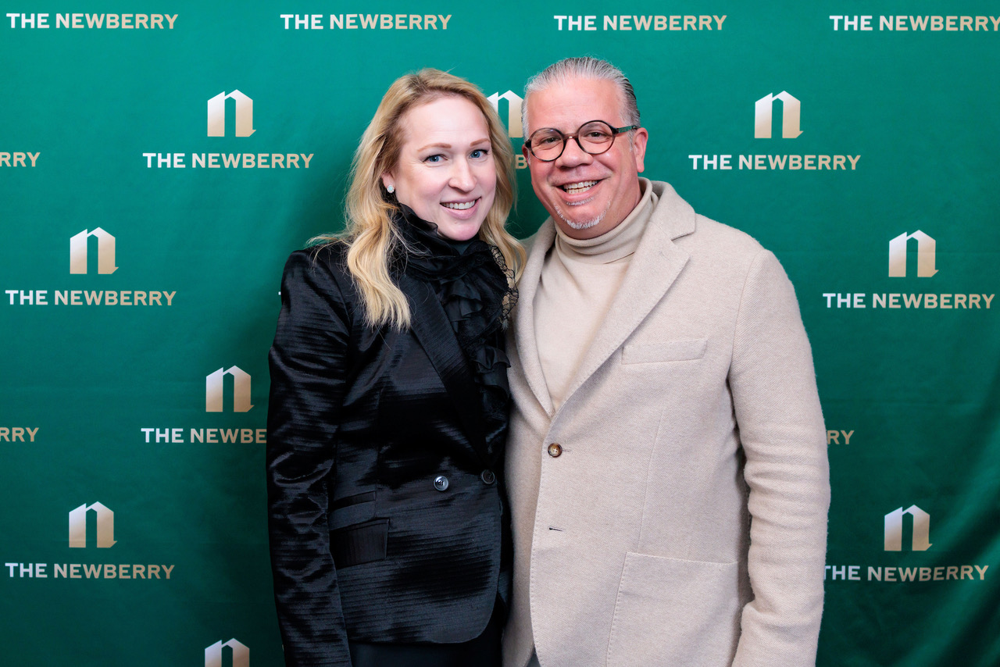
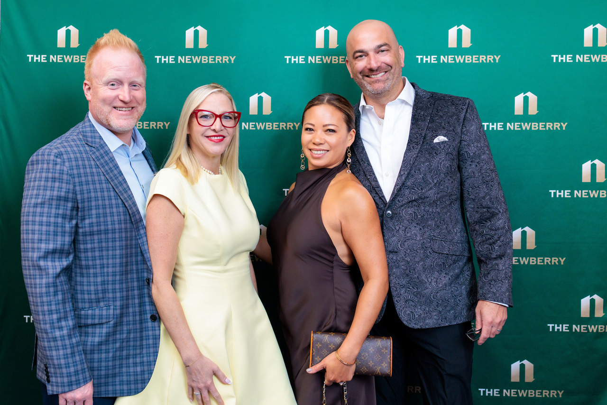
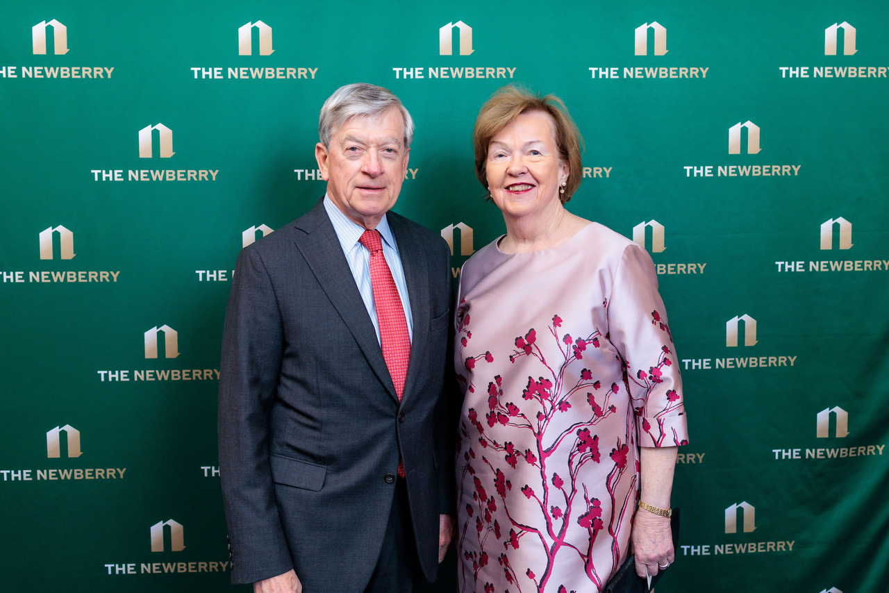